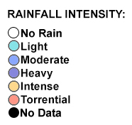

Toggle navigation
Caraga Region Online Rainfall Monitoring
Prepared by CSU Phil-LiDAR 1 Project, Caraga State University
×
Click the points on the map to display latest rainfall information.
Loading Rainfall Stations...please wait.

×